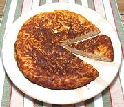

|
Frittata with PastaItaly - Frittata di Pasta Avanzata | ||||
| Serves: Effort: Sched: DoAhead: |
6 app ** 45 min Yes |
This appetizer / breakfast dish is supposed to be made using leftover pasta - but I never have that, so I'm giving the recipe using dried pasta. | |||
|
4 6 6 1/2 1/2 1/4 ----- 3 2 |
oz oz c t t --- T T |
Pasta (1) Sauce (2) Eggs Parmesan Salt Pepper ---------- Butter Butter (more) |
If you do have leftover pasta, you need two cups coated with any sauce. Prep - (30 min - 7 min work)
|